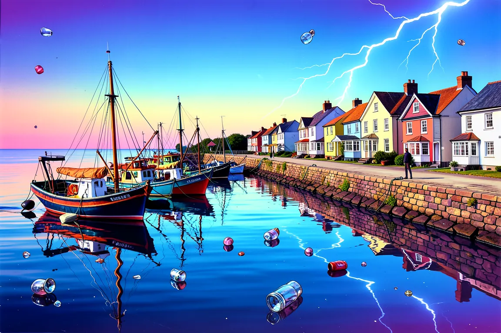

живопись · Late 1960s – Mid 1980s · также: Аэрографическое фэнтези, Аэрографическая иллюстрация, Аэрограф с хромом и молнией
Сюрреалистическая иллюстрация аэрографом: сверхнасыщенный цвет, парящие или сопоставленные предметы, хромированные поверхности, молнии и рентгеновские разрезы. Жила на обложках альбомов, в бульварной фантастике и фэнтези и в хромированных роботах-пинапах.

Главная идея
Сон можно показать как отполированный предмет: аэрограф даёт невозможной сцене гладкую освещённую поверхность фотографии.
Принципы дизайна
Стройте каждую форму аэрографическими градиентами без видимого мазка: шар или трубка держат гладкий тональный ряд из 8–12 ступеней от блика до собственной тени.
Рисуйте хром и металл с резкой линией горизонта в отражении: полоса неба над тёмной полосой земли, разделённые на 50% высоты формы.
Ставьте в одну сцену 2–4 не связанных между собой предмета, сопоставленных или парящих, с явным промежутком 5–15% картины между ними.
Поднимайте насыщенность до верхнего предела в небе и в свечении: берите 3–5 оттенков, например электрический синий, маджента и оранжевый, на полной насыщенности.
Режьте жёсткие края маскировочной плёнкой: у каждой формы чёткий край 0,5 мм или меньше, у каждого свечения мягкий край 20–60 мм.
Добавляйте один световой эффект, например молнию, блик объектива или нимб, который пересекает 30–50% картины.
Показывайте внутренность тела или машины одним рентгеновским разрезом, с внешней оболочкой, обрывающейся на чистой линии.
Ставьте горизонт на 1/3 снизу, над плоской равниной или морем, чтобы предметы стояли в глубоком пустом пространстве.
Антипаттерны
Видимые мазки кисти и пастозность краски
Приглушённые, земляные или тональные палитры
Мягкий размытый фокус без чёткого края маски
Единая реалистичная сцена без невозможного элемента
Неоновая сетка, каркас и цифровое свечение из более поздней компьютерной графики
Нарисованные от руки контурные линии одной толщины вокруг каждой формы